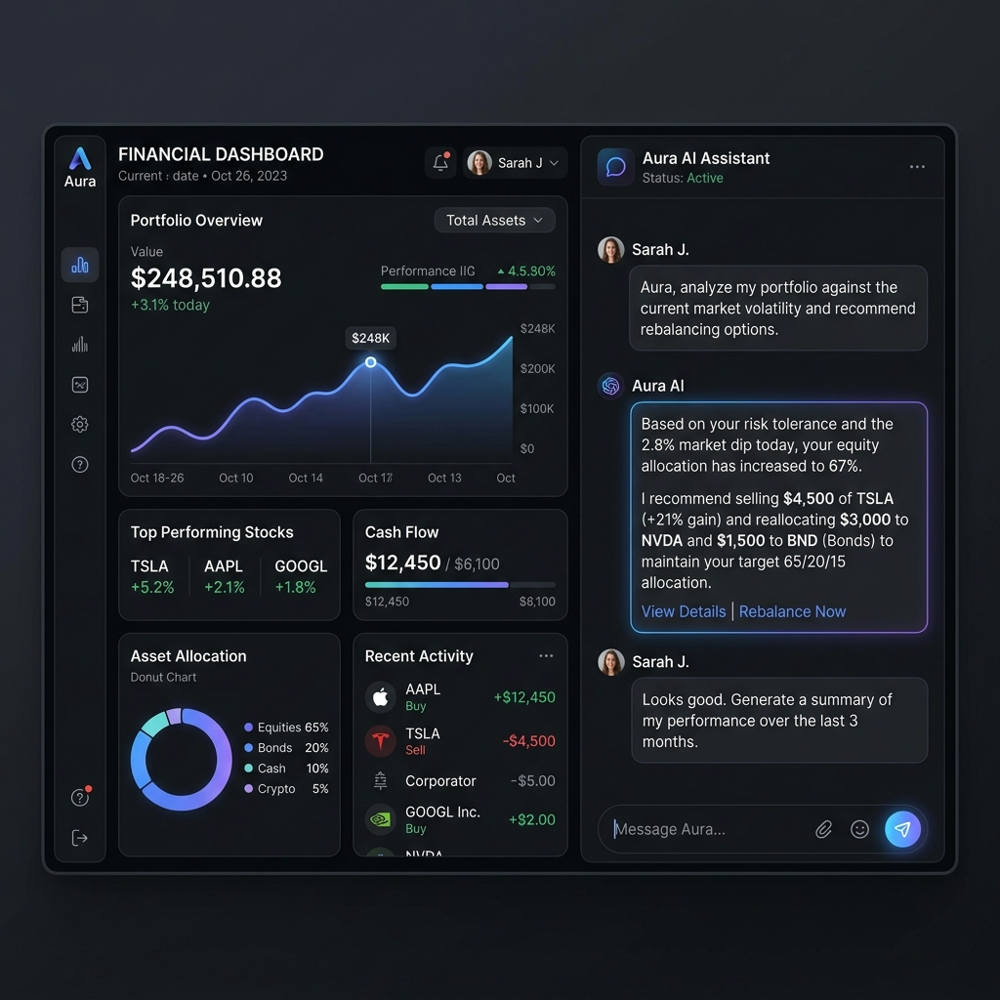

Our most capable AI chartered accountant yet. State-of-the-art models designed natively for Indian Income Tax, GST, Company Law, and automated document auditing.

Powered by Llama 3 and fine-tuned on decades of Indian regulatory data.
Utilizes the groundbreaking Llama-3 architecture with 70 billion parameters, offering unprecedented reasoning capabilities that rival top human CAs.
Connected to a live Retrieval-Augmented Generation (RAG) database comprising the entire Income Tax Act 1961, CGST Act 2017, and ICAI auditing standards.
Run massive models locally on consumer hardware. Our 4-bit and 8-bit quantized models run via Ollama, ensuring zero telemetry and complete data sovereignty.
How CABot processes a 100-page bank statement in 2.5 seconds without ever hitting the cloud.
PDFs, Excels, and Word docs are natively parsed offline using semantic extraction instead of brittle OCR templates.
The document is dynamically sliced into context-aware chunks based on transaction dates, invoice IDs, and natural language breaks.
Local GPU/CPU processes the chunks through quantized 70B parameters to detect anomalies, missing TDS, and Sec 269ST violations.
Data is synthesized into a professionally formatted Excel or PDF CA report, ready for human review and stamping.
CABot processes complex tax laws, parses unstructured bank statements, and performs forensic audits with unparalleled accuracy.
Unlike generic models, CABot is fine-tuned explicitly on decades of Indian Income Tax Act regulations, GST circulars, and ICAI auditing standards. It understands context, exemptions, and the nuance of case laws immediately.
CABot seamlessly extracts and understands meaning across PDFs, Excel sheets, and Word docs. It doesn't rely on rigid OCR templates—it reads the document exactly like a human auditor would, identifying anomalies instantly.
Your financial data is your most sensitive asset. Traditional cloud-based AI tools read, store, and train on your documents. CABot changes the paradigm.
By running 100% locally via the Ollama engine, your bank statements, PAN details, and proprietary financial models never leave your physical machine. You get cloud-level intelligence with cold-storage-level security.
Time is money. CABot eliminates network latency to provide instant answers.
See exactly how much time and money you save per client by switching to CABot.
How a top-tier Chartered Accountant leverages CABot during peak tax season.
CABot acts as an intelligence layer on top of your existing accounting stack.
All local databases and chat histories are encrypted at rest using military-grade standards.
We do not track your usage, we do not log your prompts, and we strictly prevent outbound data flows.
Our response formatting strictly adheres to the professional ethics and presentation standards of the ICAI.
Automate the grueling process of forensic audits. Feed CABot thousands of pages of bank statements and let it flag 269ST, 269SS, and TDS violations in seconds.
Navigate the complex web of ROC filings, GST compliance, and Angel Tax. Get instant, reliable answers without waiting days for your external consultant.
Track your international inward remittances, understand FEMA compliance, file GSTR-3B accurately, and maximize your Section 80C deductions effortlessly.
"CABot is a paradigm shift. We used it to audit a client's 5-year backlog of messy Excel ledgers. What usually takes a team of 4 articled assistants two weeks, CABot finished with 99.8% accuracy in 45 seconds."
"The fact that it runs locally is the only reason we are allowed to use it. Our firm's strict NDA policy prohibits uploading client PANs and financials to cloud APIs. CABot solves this completely."
We are shipping at the speed of thought. Here is what is coming next.
Launched quantized local edge inference for ultra-fast performance.
Full integration of the new capital gains indexation rules and AY 2025-26 slabs.
Uploading screenshots of blurry handwritten bills and instantly converting them to Excel ledgers.
Securely connecting CABot directly to the Income Tax Portal for 1-click JSON uploads.
Select the model size and deployment strategy that fits your accounting needs.
Yes. CABot's knowledge base is continuously updated. It fully supports the new default tax regime slabs for FY 2024-25 (AY 2025-26), including the revised standard deduction of ₹75,000 and the updated capital gains indexation rules introduced in the July 2024 budget.
We leverage Ollama to run heavily quantized 4-bit and 8-bit weights of the Llama 3 models directly on your CPU/GPU. You download the model file once, and all subsequent prompts and document uploads are processed purely on your hardware without any internet connection.
CABot supports native extraction from PDF (both text and OCR for scanned documents), Excel (.xlsx, .csv), Word (.docx), and plain text files. It can handle multi-sheet Excel workbooks and maintain tabular integrity when analyzing data.
CABot can draft the exact template, wording, and calculations required for forms like 15CB, Net Worth Certificates, or 3CD audit reports. However, you must manually review, sign, and stamp them. CABot is an assistant, not a legal substitute for a practicing Chartered Accountant.